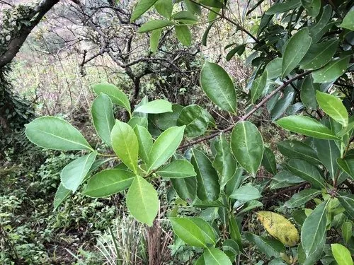

灌木与花木 · 植物界
珊瑚树 Viburnum odoratissimum

忍冬科常绿灌木或小乔木，夏季开白色小花，秋季结红色果实，耐修剪、抗污染，是南方常见的绿篱树种。
- 分类
- 门被子植物门纲木兰纲目川续断目科忍冬科属荚蒾属
- 栖息环境
- 山坡林下、溪边与城市绿地，喜温暖湿润
- 地理分布
- 中国华南、华东、西南；日本、印度有分布
- 保护级别
- 暂无评估；中国未列入国家重点保护野生植物名录
物种志
珊瑚树为忍冬科荚蒾属常绿灌木或小乔木，高 2–10 米，树皮灰褐色，枝条粗壮。叶对生，椭圆形至长圆形，革质，表面深绿色、有光泽，边缘具浅齿。圆锥花序顶生，花小，白色，花期 5–6 月；果实为核果，椭圆形，成熟时红色，后转黑色，果期 9–11 月。
珊瑚树原产中国华南、华东及西南地区，日本、印度也有分布，生于山坡林下与溪边。它喜光，也耐半阴，喜温暖湿润，不耐严寒，适宜疏松肥沃、排水良好的土壤。枝叶茂密、耐修剪、抗污染，是南方常见的绿篱与防护林树种；秋季红果累累，也可作观果树种。栽培以扦插繁殖为主，北方盆栽冬季需移入室内。
形态与习性
- 株高2–10 米，枝条粗壮
- 花期5–6 月，花小、白色
- 果期9–11 月，核果红色后转黑
- 光照喜光，也耐半阴
- 水分喜湿润，忌积水
- 土壤疏松肥沃、排水良好的土壤
- 主要用途绿篱、防护林与观果
趣味知识
- 珊瑚树在上海等南方城市常被用作绿篱，俗称“法国冬青”。
- 它秋季结红色果实，果序形似珊瑚，因此得名。
- 珊瑚树枝叶茂密、抗污染，是优良的防护林树种。
- 它不耐严寒，北方只能盆栽或温室栽培。